vLLM architecture
and API serving
From a local model to an observable OpenAI-compatible service contract.

The client sees an HTTP contract. Behind it, tokenization, scheduling, model workers and GPU kernels form the service.
HTTP succeeds. The ticket goes to the wrong team.
One classifier investigationExpected
Login works, but Save loses edits. Route this ticket to bug.
Actual Qwen result
access: valid format, wrong meaning. Separately, a partial correct-looking label must not count as success.
Three skills for a useful ML service
Inspectable student resultsFrom model computation to useful predictions
Seven turnsArchitecture today; scheduling internals next
ScopeWe name the scheduler and KV allocator so requests can be traced. Topic 05 derives PagedAttention and continuous batching; Topic 06 measures the saturation knee under many clients.
What would you ask the server first?
Pause · 60 secondsWould you restart the GPU worker, list advertised models, change the prompt, or profile a kernel? Choose the least costly discriminating probe.
Engine boundary
Separate the API process from model execution.
Serve the same ticket classifier as Topic 03
Concrete application| Ticket | Gold label | Why |
|---|---|---|
| Charged twice; refund duplicate | billing | payment dispute |
| Password reset expired | access | cannot sign in |
| Login works; Save loses edits | bug | malfunction after login |
One request crosses four responsibility zones
High-level architecture| Zone | Owns | Failure symptom |
|---|---|---|
| API frontend | HTTP, validation, streaming | 4xx / broken SSE |
| tokenizer/template | messages → token IDs | wrong prompt or no chat |
| engine/scheduler | admission, live request state | queue/limit |
| worker | weights, KV, GPU kernels | OOM/compute error |
NF4 experiment ≠ deployed quantized service
Bridge from Topic 03Earlier experiment
Transformers: FP16 vs bitsandbytes NF4. Compare storage, behavior and execution.
Today's control
Reload pinned Qwen in FP16 under vLLM. Keep the ticket task; test engine integration separately.
The same Qwen model, now behind an API
Pinned 0.5B config · not a new model| Quantity | Value | Serving consequence |
|---|---|---|
| decoder layers | 24 | KV retained at every layer |
| hidden / query heads | 896 / 14 | head dimension 64 |
| KV heads / dtype | 2 / FP16 | 12 KiB logical KV per token |
| lab context cap | 2048 positions | rendered prompt + output reservation |
What the GPU computes for one request
Logical tensor shapes · pinned Qwen config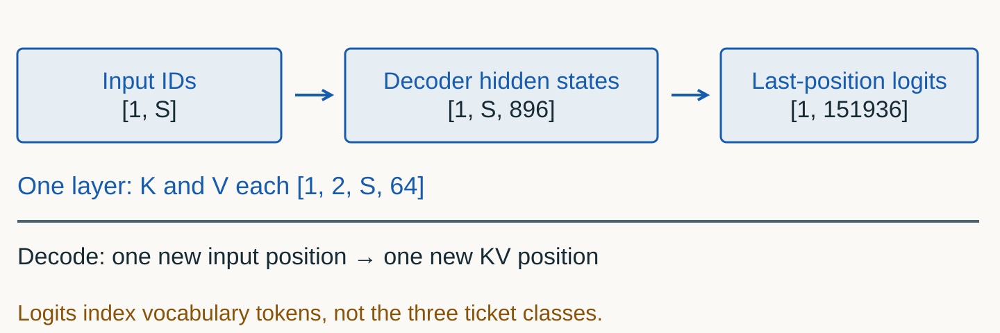
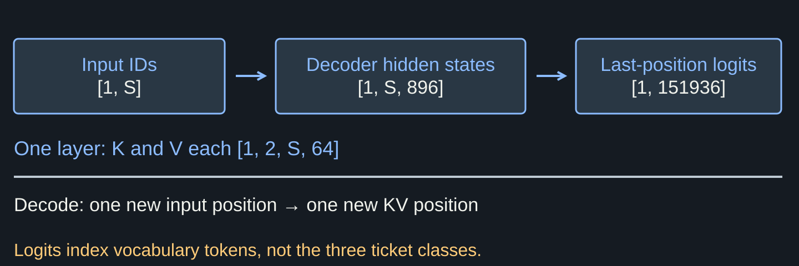
Prefill and decode change different tensor axes
One sequence · logical shapes| Stage | Input positions | Logical K/V at one layer |
|---|---|---|
| Prefill | S rendered positions | [1, 2, S, 64] |
| Next decode | one new position | [1, 2, S+1, 64] |
| Next-token logits | one last-position state | [1, 151936] vocabulary scores |
A valid label may still route the ticket wrongly
Actual Qwen FP16 · Topic03 Transformers| Input clue | Gold | Actual output |
|---|---|---|
| Save fails after successful login | bug | access |
| Uploaded images appear upside down | bug | access |
| Duplicate payment needs refund | billing | bug |
Model identity
The URL, served name and checkpoint revision are different identifiers.
One deployment has several different identities
Recorded deployment · vLLM 0.29.0

Generation request for a useful task
Same model · explicit contract| Field | Value | Purpose |
|---|---|---|
| system message | three labels + definitions | declare decision boundary |
| user message | literal support ticket | the observation to classify |
temperature / max_tokens | 0 / 8 | greedy baseline + bounded output |
structured_outputs.choice | optional three-label list | constrain strings, not correctness |
| model | topic04 | advertised service identity |
The last hidden state becomes vocabulary logits
A generation step · not three-class softmaxJSON roles become a model-specific token sequence
Chat-template mechanism · schematic boundaries

Four visible pieces become 33 input tokens
Fresh v3 capture · local pinned tokenizer

Temperature changes the next-token distribution
Invented logits [2, 1, 0] · nucleus mass = 1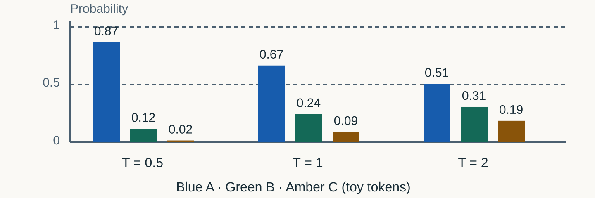
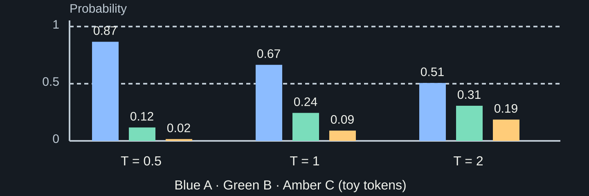
Nucleus sampling keeps a cumulative prefix
Toy logits · T = 1 · p = 0.8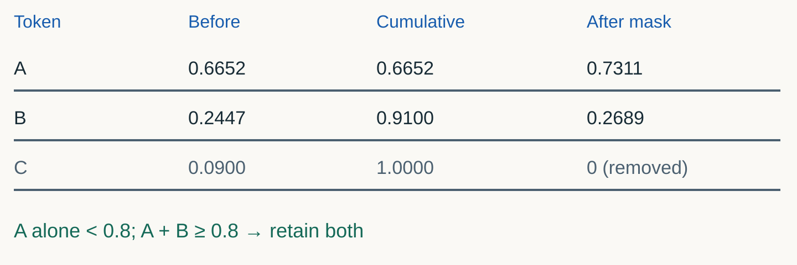
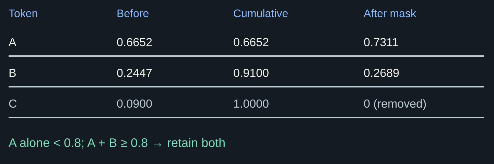
Constrained output controls syntax, not meaning
Prefix constraint · illustrative strings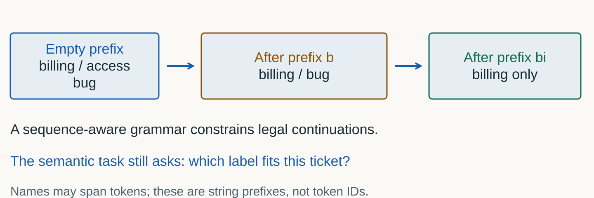
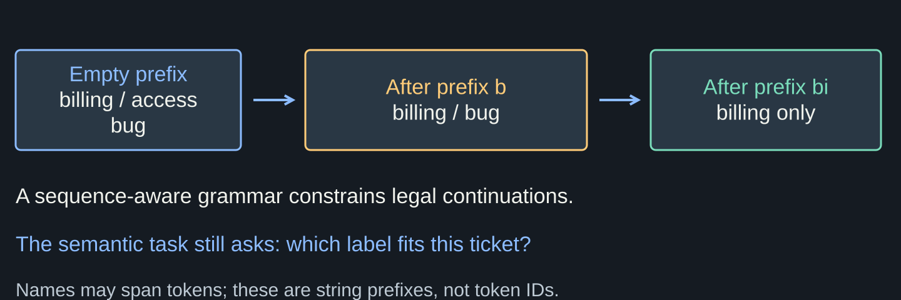
Actual label IDs and the output cap
Pinned Qwen tokenizer · inspect before guessing| String | Isolated ID | What cap 1 cannot promise |
|---|---|---|
| billing | 38637 | first generated token is this label |
| access | 5211 | the label is semantically correct |
| bug | 2313 | a non-label prefix cannot appear |
Where does this request fail?
Pause · boundary test/v1/models lists topic04; SDK sends model="submission"Predict the failure layer and the shortest fix. What extra test would prove that the chat template is also valid?
Request contract
Validate names, roles, token budgets and failure states.
Generation settings change the contract
Explicit request values and limits| Setting | Case value | Consequence |
|---|---|---|
| temperature | 0 | greedy-style selection, not cross-runtime identity |
max_tokens | 48 ordinary; 16 raw | output cap, not promised length |
| stream | false or true | JSON response or SSE events |
| retry count | 0 in smoke | one recorded attempt per call |
Context overflow before generation
Measured negative requestWrite the admission guard before starting CUDA
Student task A2 · illustrative reservation| Rendered prompt | Output cap | Against 2048 |
|---|---|---|
| 33 | 16 | 49: admit |
| 1800 | 512 | 2312: reject |
| 1800 | 128 | 1928: admit |
| 2032 | 16 | 2048: equality fits |
Valid labels can still be wrong
Measured Topic03 · Transformers FP16 · T4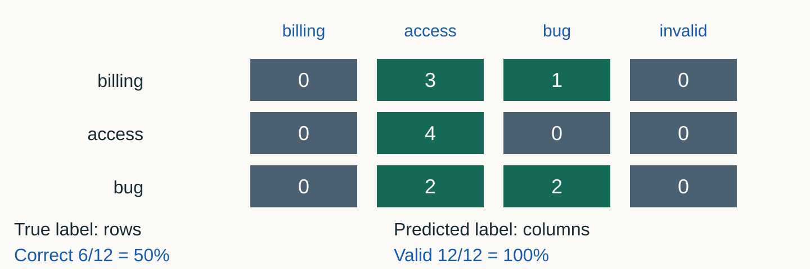
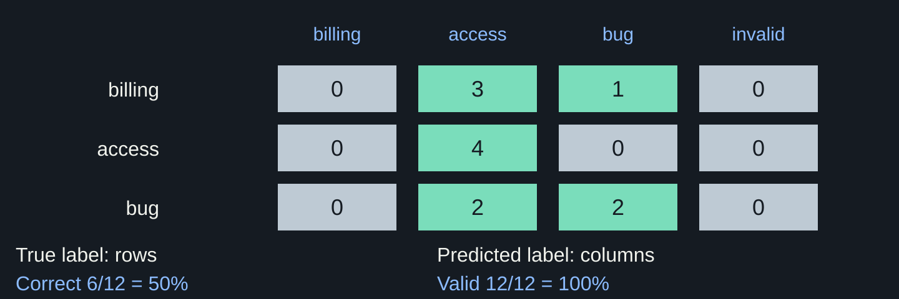
Evaluate transport, format and meaning separately
Eight invented attempts · all stay in the denominator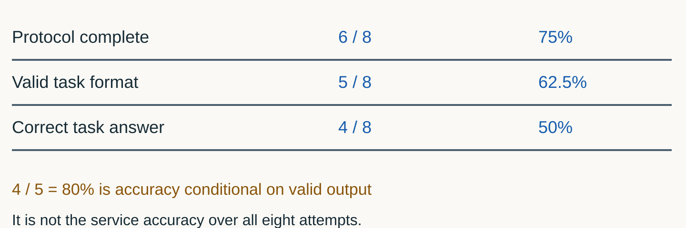
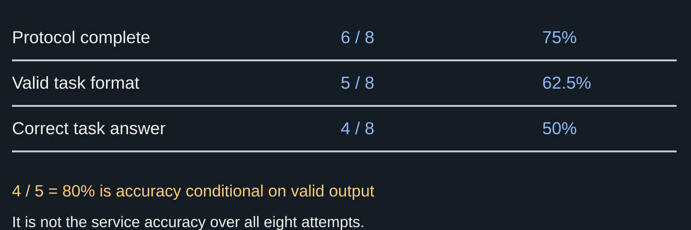
The held-out model equals a constant baseline
Measured v2 · vLLM FP16 · T4 High RAM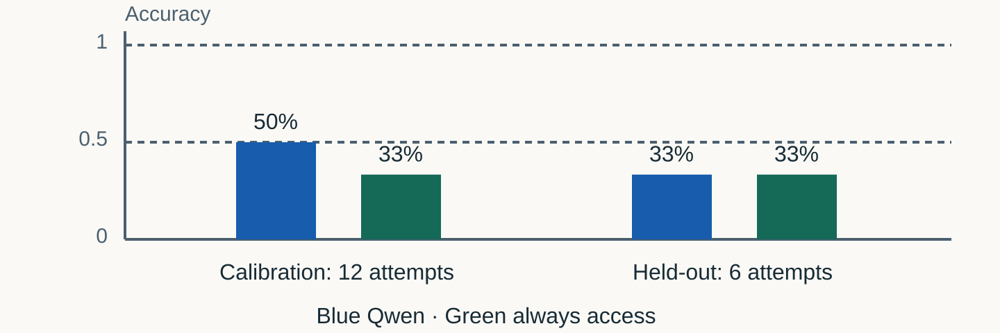
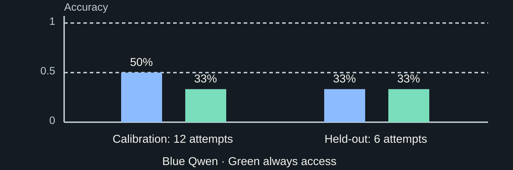
Streaming
A partial answer is not a completed request.
Nine text deltas form the recorded greeting
Fresh v3 capture · client-arrival clocks

Finish, DONE and useful output are separate checks
Synthetic completion decisions

Read-size distribution, not token latency
Recorded v3 · 13 client reads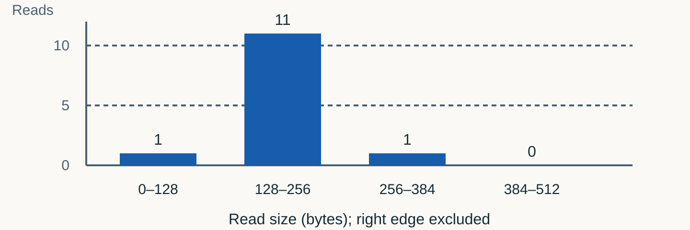
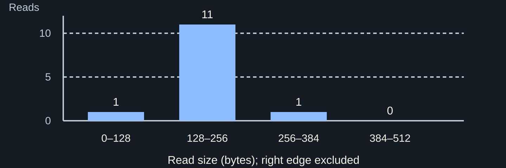
Compare, choose, then open held-out
One factor · observed decision| Step | Concrete action | Saved result |
|---|---|---|
| Declare | baseline + prompt OR format change | same model / cases / T / cap |
| Compare | 12 calibration tickets per policy | matrices, baseline, class recalls |
| Choose | inspect observations; freeze winner | decision + hash; no test yet |
| Test | six held-out tickets, selected policy | no retuning; bounded conclusion |
Each attempt retains its completion state
Text-only client success predicate| Observation | Client state | Metric treatment |
|---|---|---|
| finish + DONE, no error | protocol complete | check task acceptance |
| content then disconnect | partial answer | incomplete attempt |
| timeout before content | failed attempt | first-content time unavailable |
| error event, then DONE | failed generation | terminal does not erase error |
One request: observed client event arrivals
Recorded v3 · one raw request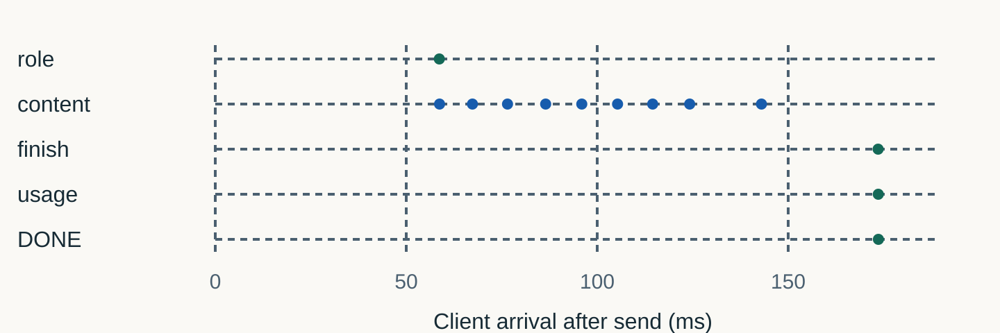
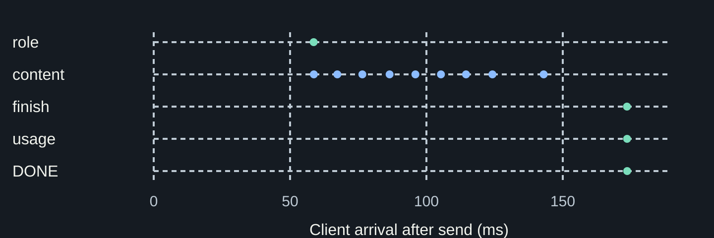
Capacity
Context, live tokens and memory determine admission.
Rendered input and requested output share a context budget
Measured rejection + illustrative alternatives

The lab model retains 12 KiB of logical KV per token
Pinned 0.5B config · payload arithmetic

A sequence cap is not a performance guarantee
Common shortcut“--max-num-seqs 4 guarantees four requests at any context.”
Operate safely
The model, server and cache have separate lifecycles.
Teardown has observable acceptance checks
One server process tree| Check | Pass evidence | Failure action |
|---|---|---|
| owned server | process tree has exited | bounded terminate, then escalate |
| loopback port | no listener on owned port | identify owner before restarting |
| GPU state | baseline restored | stop the next GPU task |
| immutable snapshot | still cached and verified | reuse offline next week |
Prove it
A launch command plus client evidence becomes a service contract.
Compare, choose, then test
One task · two student implementations| Stage | Student action | Evidence |
|---|---|---|
| A–C | budget + all-attempt scoring | 11 + 6 CPU checks; declare challenger |
| D2 | compare 2 calibration policies | matched 12-ticket matrices + baseline |
| D3 | choose after observations | saved decision + hash |
| E–F | test selected policy; explain errors | 6 held-out attempts; no retuning |
Transfer: score every attempted ticket
Exit ticket · seven new attempts| Outcome | Count | Meaning |
|---|---|---|
| complete, valid, correct | 4 | correct predictions |
| complete, valid, wrong | 1 | semantic error |
| complete, invalid string | 1 | format error |
| partial: correct-looking label | 1 | not an accepted prediction |
Now inspect the scheduler.
Topic 05 derives PagedAttention and continuous batching: how live requests share KV memory and GPU iterations after the API admits them.